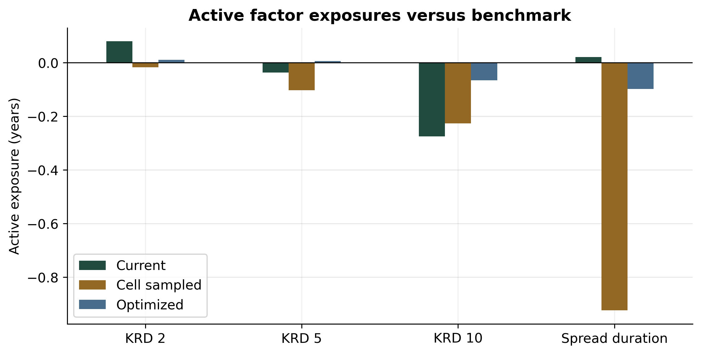
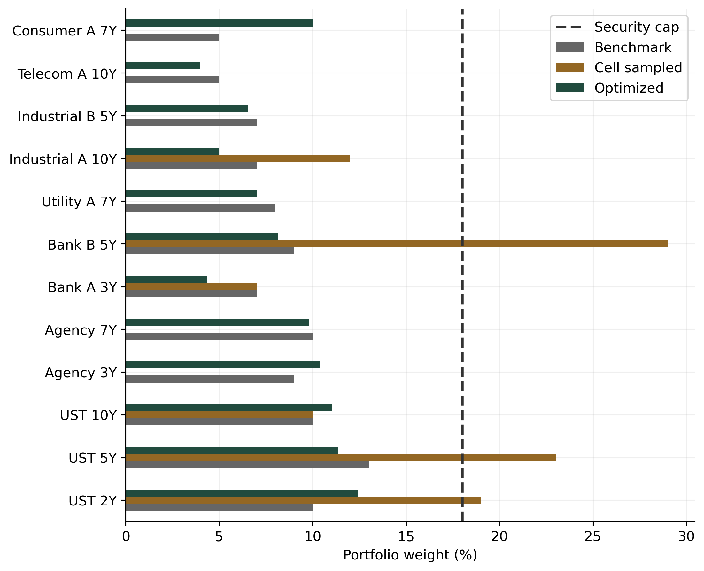
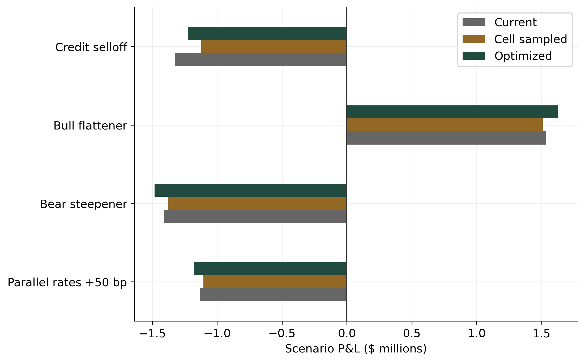

Show calculation
import numpy as np
import pandas as pd
import matplotlib.pyplot as plt
from scipy.optimize import minimize
portfolio_value = 50_000_000
position_cap = 0.18
treasury_minimum = 0.25
corporate_cap = 0.45
duration_tolerance = 0.05From an investable universe to weights, trades, and stress tests
How should a manager invest $50 million near a bond benchmark while keeping active risk, concentration, and trading costs under control? Compare a simple cell sample with a constrained portfolio, then turn the chosen weights into a trade list and a decision memo.
An investment-grade manager has $50 million to invest. The mandate is to earn more carry than a broad bond benchmark without taking an unintended duration, curve, sector, issuer, or liquidity bet. This demo turns that mandate into an auditable portfolio and an implementable trade list.
The security descriptions and market analytics are an illustrative teaching universe, not dated observations or executable quotes. In practice, the same table would come from a portfolio system, evaluated pricing service, dealer runs, and reference-data checks.
| Workflow stage | In this case |
|---|---|
| Supplied | Bond terms, yields, spreads, durations, liquidity costs, benchmark and current weights |
| Constructed | A transparent cell-sampled portfolio and a constrained optimized portfolio |
| Diagnosed | Factor mismatches, tracking error, concentration, turnover, and transaction cost |
| Used for | Trade sizing, scenario P&L, and a portfolio recommendation |
The optimized portfolio must be fully invested, hold no more than 18% in one security, keep at least 25% in Treasuries, cap corporate exposure at 45%, and stay within 0.05 years of benchmark duration. These are teaching constraints; an actual mandate would also specify ratings, currencies, derivatives, cash, tax, ESG, and counterparty rules.
Yield and spread are annual percentages expressed as decimals. Duration and spread duration are in years; transaction cost is a one-way estimate in basis points of market value. KRD 2, KRD 5, and KRD 10 are simplified key-rate duration contributions per dollar invested.
universe = pd.DataFrame({
"Bond": ["UST 2Y", "UST 5Y", "UST 10Y", "Agency 3Y", "Agency 7Y",
"Bank A 3Y", "Bank B 5Y", "Utility A 7Y", "Industrial A 10Y",
"Industrial B 5Y", "Telecom A 10Y", "Consumer A 7Y"],
"Sector": ["Treasury", "Treasury", "Treasury", "Agency", "Agency",
"Corporate", "Corporate", "Corporate", "Corporate",
"Corporate", "Corporate", "Corporate"],
"Cell": ["Gov 1-4", "Gov 5-8", "Gov 9+", "Gov 1-4", "Gov 5-8",
"Corp 1-4", "Corp 5-8", "Corp 5-8", "Corp 9+",
"Corp 5-8", "Corp 9+", "Corp 5-8"],
"Yield": [0.0415, 0.0435, 0.0455, 0.0442, 0.0470, 0.0505,
0.0528, 0.0555, 0.0585, 0.0540, 0.0600, 0.0562],
"Spread (bp)": [0, 0, 0, 38, 55, 92, 112, 138, 165, 125, 182, 148],
"Duration": [1.88, 4.45, 7.85, 2.72, 5.82, 2.65, 4.35, 5.65,
7.35, 4.18, 7.10, 5.45],
"Convexity": [4.8, 23.5, 72.0, 9.0, 39.5, 8.5, 22.0, 37.0,
62.0, 20.5, 58.0, 35.0],
"Spread duration": [0, 0, 0, 2.60, 5.65, 2.55, 4.20, 5.45,
7.05, 4.02, 6.75, 5.25],
"KRD 2": [1.70, 0.35, 0.05, 2.30, 0.25, 2.20, 0.45, 0.20, 0.10, 0.50, 0.10, 0.25],
"KRD 5": [0.18, 3.75, 1.20, 0.42, 4.30, 0.45, 3.35, 3.80, 1.25, 3.10, 1.10, 3.65],
"KRD 10": [0.00, 0.35, 6.60, 0.00, 1.27, 0.00, 0.55, 1.65, 6.00, 0.58, 5.90, 1.55],
"Trading cost (bp)": [1, 2, 3, 3, 5, 6, 7, 9, 12, 8, 14, 10],
"Benchmark weight": [0.10, 0.13, 0.10, 0.09, 0.10, 0.07,
0.09, 0.08, 0.07, 0.07, 0.05, 0.05],
"Current weight": [0.12, 0.10, 0.08, 0.10, 0.08, 0.08,
0.10, 0.07, 0.05, 0.08, 0.04, 0.10],
})
assert np.isclose(universe["Benchmark weight"].sum(), 1)
assert np.isclose(universe["Current weight"].sum(), 1)
universe[["Bond", "Sector", "Cell", "Yield", "Spread (bp)", "Duration",
"Spread duration", "Trading cost (bp)", "Benchmark weight"]]| Sector | Cell | Yield | |
|---|---|---|---|
| Bond | |||
| UST 2Y | Treasury | Gov 1-4 | 0.0415 |
| UST 5Y | Treasury | Gov 5-8 | 0.0435 |
| UST 10Y | Treasury | Gov 9+ | 0.0455 |
| Agency 3Y | Agency | Gov 1-4 | 0.0442 |
| Agency 7Y | Agency | Gov 5-8 | 0.047 |
| Bank A 3Y | Corporate | Corp 1-4 | 0.0505 |
| Bank B 5Y | Corporate | Corp 5-8 | 0.0528 |
| Utility A 7Y | Corporate | Corp 5-8 | 0.0555 |
| Industrial A 10Y | Corporate | Corp 9+ | 0.0585 |
| Industrial B 5Y | Corporate | Corp 5-8 | 0.054 |
| Telecom A 10Y | Corporate | Corp 9+ | 0.06 |
| Consumer A 7Y | Corporate | Corp 5-8 | 0.0562 |
| Spread (bp) | Duration | Spread duration | |
|---|---|---|---|
| Bond | |||
| UST 2Y | 0 | 1.88 | 0 |
| UST 5Y | 0 | 4.45 | 0 |
| UST 10Y | 0 | 7.85 | 0 |
| Agency 3Y | 38 | 2.72 | 2.6 |
| Agency 7Y | 55 | 5.82 | 5.65 |
| Bank A 3Y | 92 | 2.65 | 2.55 |
| Bank B 5Y | 112 | 4.35 | 4.2 |
| Utility A 7Y | 138 | 5.65 | 5.45 |
| Industrial A 10Y | 165 | 7.35 | 7.05 |
| Industrial B 5Y | 125 | 4.18 | 4.02 |
| Telecom A 10Y | 182 | 7.1 | 6.75 |
| Consumer A 7Y | 148 | 5.45 | 5.25 |
| Trading cost (bp) | Benchmark weight | |
|---|---|---|
| Bond | ||
| UST 2Y | 1 | 0.1 |
| UST 5Y | 2 | 0.13 |
| UST 10Y | 3 | 0.1 |
| Agency 3Y | 3 | 0.09 |
| Agency 7Y | 5 | 0.1 |
| Bank A 3Y | 6 | 0.07 |
| Bank B 5Y | 7 | 0.09 |
| Utility A 7Y | 9 | 0.08 |
| Industrial A 10Y | 12 | 0.07 |
| Industrial B 5Y | 8 | 0.07 |
| Telecom A 10Y | 14 | 0.05 |
| Consumer A 7Y | 10 | 0.05 |
Putting 10% of $50 million in the UST 5Y means $5 million of market value. Its 4.45-year duration contributes $5,000,000 × 4.45 × 0.0001 = $2,225 per bp. Its contribution to portfolio duration is 0.10 × 4.45 = 0.445 years. Dollar exposure adds across positions; security duration must first be weighted. The weighted average of individual yields is a carry proxy, not the portfolio’s cash-flow internal rate of return.
For weights \(w_i\) and security exposure \(x_{ik}\), portfolio exposure to factor \(k\) is \(x_{P,k}=\sum_i w_i x_{ik}\). Dollar value of one basis point is \(DV01=V_P D_P(0.0001)\).
factor_columns = ["KRD 2", "KRD 5", "KRD 10", "Spread duration"]
def portfolio_summary(weights):
weights = np.asarray(weights)
result = {
"Yield (%)": 100 * weights @ universe["Yield"],
"Duration": weights @ universe["Duration"],
"Convexity": weights @ universe["Convexity"],
"Spread duration": weights @ universe["Spread duration"],
"Treasury weight (%)": 100 * weights[universe["Sector"].eq("Treasury")].sum(),
"Corporate weight (%)": 100 * weights[universe["Sector"].eq("Corporate")].sum(),
"Largest position (%)": 100 * weights.max(),
}
result.update({column: weights @ universe[column] for column in factor_columns[:3]})
result["DV01 ($/bp)"] = portfolio_value * result["Duration"] * 0.0001
return pd.Series(result)
benchmark_weights = universe["Benchmark weight"].to_numpy()
current_weights = universe["Current weight"].to_numpy()
portfolio_summary(benchmark_weights).round(3)Yield (%) 4.944
Duration 4.842
Convexity 31.455
Spread duration 3.166
Treasury weight (%) 33.000
Corporate weight (%) 48.000
Largest position (%) 13.000
KRD 2 0.722
KRD 5 2.272
KRD 10 1.847
DV01 ($/bp) 24209.500
dtype: float64Cell sampling first matches broad sector/maturity buckets, then chooses a representative liquid bond in each cell. It is easy to explain, but matching cell weights does not guarantee matching duration or key-rate exposure.
cell_weights = universe.groupby("Cell")["Benchmark weight"].sum()
representatives = {
"Gov 1-4": "UST 2Y", "Gov 5-8": "UST 5Y", "Gov 9+": "UST 10Y",
"Corp 1-4": "Bank A 3Y", "Corp 5-8": "Bank B 5Y", "Corp 9+": "Industrial A 10Y",
}
sampled_weights = np.zeros(len(universe))
for cell, weight in cell_weights.items():
bond_name = representatives[cell]
sampled_weights[universe.index[universe["Bond"].eq(bond_name)][0]] = weight
sampled_table = pd.DataFrame({"Benchmark": benchmark_weights,
"Cell sampled": sampled_weights}, index=universe["Bond"])
sampled_table.loc[sampled_table.sum(axis=1).gt(0)].round(3)| Benchmark | Cell sampled | |
|---|---|---|
| Bond | ||
| UST 2Y | 0.1 | 0.19 |
| UST 5Y | 0.13 | 0.23 |
| UST 10Y | 0.1 | 0.1 |
| Agency 3Y | 0.09 | 0 |
| Agency 7Y | 0.1 | 0 |
| Bank A 3Y | 0.07 | 0.07 |
| Bank B 5Y | 0.09 | 0.29 |
| Utility A 7Y | 0.08 | 0 |
| Industrial A 10Y | 0.07 | 0.12 |
| Industrial B 5Y | 0.07 | 0 |
| Telecom A 10Y | 0.05 | 0 |
| Consumer A 7Y | 0.05 | 0 |
Let \(a=w-w_B\) be active weights and \(B\) the factor-exposure matrix. A compact factor-risk approximation is
\[TE^2 \approx (B'a)'\Sigma_F(B'a)+\sum_i a_i^2\sigma_{\epsilon,i}^2.\]
The objective balances predicted tracking error, turnover, transaction cost, and a modest preference for carry:
\[\min_w\; TE^2+\lambda_T\sum_i(w_i-w_i^{current})^2 +\lambda_C\sum_i c_i|w_i-w_i^{current}|-\lambda_Y w'y.\]
This is a teaching risk model. Production construction would use a validated factor covariance matrix, specific-risk forecasts, executable costs, lot sizes, and compliance-tested constraints. Here, factor and specific volatilities are annualized decimal return/rate units, so predicted tracking error is annualized. The objective coefficients are illustrative tuning weights, not estimated investor preferences or a guarantee of outperformance.
exposure_matrix = universe[factor_columns].to_numpy()
factor_vol = np.array([0.0070, 0.0080, 0.0090, 0.0060])
factor_correlation = np.array([
[1.00, 0.82, 0.62, 0.05], [0.82, 1.00, 0.85, 0.08],
[0.62, 0.85, 1.00, 0.10], [0.05, 0.08, 0.10, 1.00],
])
factor_covariance = np.outer(factor_vol, factor_vol) * factor_correlation
specific_vol = np.where(universe["Sector"].eq("Corporate"), 0.010, 0.003)
cost_rate = universe["Trading cost (bp)"].to_numpy() / 10_000
benchmark_duration = benchmark_weights @ universe["Duration"]
def tracking_variance(weights):
active = weights - benchmark_weights
active_factors = active @ exposure_matrix
return active_factors @ factor_covariance @ active_factors + np.sum((active * specific_vol) ** 2)
def objective(weights):
turnover_penalty = 0.002 * np.sum((weights - current_weights) ** 2)
transaction_cost = 0.20 * np.sum(cost_rate * np.abs(weights - current_weights))
carry_reward = 0.0015 * weights @ universe["Yield"]
return tracking_variance(weights) + turnover_penalty + transaction_cost - carry_rewardtreasury_mask = universe["Sector"].eq("Treasury").to_numpy()
corporate_mask = universe["Sector"].eq("Corporate").to_numpy()
constraints = [
{"type": "eq", "fun": lambda w: w.sum() - 1},
{"type": "ineq", "fun": lambda w: w[treasury_mask].sum() - treasury_minimum},
{"type": "ineq", "fun": lambda w: corporate_cap - w[corporate_mask].sum()},
{"type": "ineq", "fun": lambda w: duration_tolerance -
abs(w @ universe["Duration"].to_numpy() - benchmark_duration)},
]
solution = minimize(objective, current_weights, method="SLSQP",
bounds=[(0, position_cap)] * len(universe), constraints=constraints,
options={"ftol": 1e-12, "maxiter": 2_000})
assert solution.success, solution.message
optimized_weights = solution.xCheck constraints before comparing yield. The cell sample is deliberately transparent, not constrained: putting a whole cell into one representative can breach the 18% security limit. The optimizer searches among feasible portfolios; it does not turn a higher assumed yield into a free excess return.
portfolios = {"Benchmark": benchmark_weights, "Current": current_weights,
"Cell sampled": sampled_weights, "Optimized": optimized_weights}
comparison = pd.DataFrame({name: portfolio_summary(weights)
for name, weights in portfolios.items()}).T
comparison["Ex ante tracking error (%)"] = [
100 * np.sqrt(tracking_variance(weights)) for weights in portfolios.values()]
comparison["Turnover (%)"] = [
100 * np.abs(weights - current_weights).sum() / 2 for weights in portfolios.values()]
comparison["Estimated trading cost ($)"] = [
portfolio_value * np.sum(cost_rate * np.abs(weights - current_weights))
for weights in portfolios.values()]
comparison.round(3)| Benchmark | Current | Cell sampled | |
|---|---|---|---|
| Yield (%) | 4.944 | 4.962 | 4.831 |
| Duration | 4.842 | 4.61 | 4.495 |
| Convexity | 31.455 | 28.776 | 27.932 |
| Spread duration | 3.166 | 3.187 | 2.242 |
| Treasury weight (%) | 33 | 30 | 52 |
| Corporate weight (%) | 48 | 52 | 48 |
| Largest position (%) | 13 | 12 | 29 |
| KRD 2 | 0.722 | 0.802 | 0.705 |
| KRD 5 | 2.272 | 2.235 | 2.17 |
| KRD 10 | 1.847 | 1.572 | 1.62 |
| DV01 ($/bp) | 24,209.5 | 23,048 | 22,473.5 |
| Ex ante tracking error (%) | 0 | 0.247 | 0.694 |
| Turnover (%) | 11 | 0 | 48 |
| Estimated trading cost ($) | 7,250 | 0 | 30,750 |
| Optimized | |
|---|---|
| Yield (%) | 4.915 |
| Duration | 4.792 |
| Convexity | 31.024 |
| Spread duration | 3.068 |
| Treasury weight (%) | 34.805 |
| Corporate weight (%) | 45 |
| Largest position (%) | 12.416 |
| KRD 2 | 0.732 |
| KRD 5 | 2.278 |
| KRD 10 | 1.781 |
| DV01 ($/bp) | 23,959.5 |
| Ex ante tracking error (%) | 0.104 |
| Turnover (%) | 7 |
| Estimated trading cost ($) | 3,462.414 |
active_exposures = pd.DataFrame({
name: (weights - benchmark_weights) @ exposure_matrix
for name, weights in portfolios.items() if name != "Benchmark"
}, index=factor_columns)
ax = active_exposures.plot(kind="bar", figsize=(8.2, 4.2))
ax.axhline(0, color="black", linewidth=0.8)
ax.set(ylabel="Active exposure (years)", title="Active factor exposures versus benchmark")
ax.grid(axis="y", alpha=0.3)
plt.xticks(rotation=0)
plt.tight_layout()
plt.show()
weight_view = pd.DataFrame({"Benchmark": benchmark_weights,
"Cell sampled": sampled_weights,
"Optimized": optimized_weights}, index=universe["Bond"]) * 100
ax = weight_view.plot.barh(figsize=(8, 6.5), color=["#666666", "#936724", "#214b3e"])
ax.axvline(100 * position_cap, color="#333333", linestyle="--", label="Security cap")
ax.set(xlabel="Portfolio weight (%)", ylabel="")
ax.legend()
plt.tight_layout()
plt.show()
Trades below are dollar market values. A real order list would convert market value to face amount using clean price, accrued interest, minimum denominations, round lots, and available dealer inventory.
trade_list = universe[["Bond", "Sector", "Cell"]].copy()
trade_list["Current weight (%)"] = 100 * current_weights
trade_list["Target weight (%)"] = 100 * optimized_weights
trade_list["Trade ($mm)"] = portfolio_value * (optimized_weights - current_weights) / 1_000_000
trade_list["Estimated cost ($)"] = portfolio_value * np.abs(optimized_weights - current_weights) * cost_rate
trade_list.loc[trade_list["Trade ($mm)"].abs().gt(0.025)].round(3)| Sector | Cell | Current weight (%) | |
|---|---|---|---|
| Bond | |||
| UST 2Y | Treasury | Gov 1-4 | 12 |
| UST 5Y | Treasury | Gov 5-8 | 10 |
| UST 10Y | Treasury | Gov 9+ | 8 |
| Agency 3Y | Agency | Gov 1-4 | 10 |
| Agency 7Y | Agency | Gov 5-8 | 8 |
| Bank A 3Y | Corporate | Corp 1-4 | 8 |
| Bank B 5Y | Corporate | Corp 5-8 | 10 |
| Industrial B 5Y | Corporate | Corp 5-8 | 8 |
| Target weight (%) | Trade ($mm) | Estimated cost ($) | |
|---|---|---|---|
| Bond | |||
| UST 2Y | 12.416 | 0.208 | 20.778 |
| UST 5Y | 11.36 | 0.68 | 136.018 |
| UST 10Y | 11.029 | 1.515 | 454.369 |
| Agency 3Y | 10.38 | 0.19 | 57.047 |
| Agency 7Y | 9.815 | 0.907 | 453.707 |
| Bank A 3Y | 4.341 | -1.83 | 1,097.806 |
| Bank B 5Y | 8.128 | -0.936 | 655.032 |
| Industrial B 5Y | 6.531 | -0.735 | 587.629 |
For Treasury yield shift \(\Delta y_i\) and spread change \(\Delta s_i\),
\[\frac{\Delta P_i}{P_i}\approx-D_i\Delta y_i-SD_i\Delta s_i +\frac12 C_i(\Delta y_i)^2.\]
scenarios = {
"Parallel rates +50 bp": {"short": 50, "intermediate": 50, "long": 50, "spread": 0},
"Bear steepener": {"short": 20, "intermediate": 45, "long": 80, "spread": 15},
"Bull flattener": {"short": -20, "intermediate": -55, "long": -90, "spread": -10},
"Credit selloff": {"short": 0, "intermediate": 0, "long": 0, "spread": 100},
}
def scenario_return(weights, scenario):
key_shocks = np.array([scenario["short"], scenario["intermediate"], scenario["long"]]) / 10_000
key_exposures = universe[["KRD 2", "KRD 5", "KRD 10"]].to_numpy()
rate_effect = key_exposures @ key_shocks
# Parallel convexity does not identify cross-key-rate curvature. Use the
# second-order correction only for a parallel shock, where it is defined.
convexity_effect = (0.5 * universe["Convexity"].to_numpy() * key_shocks[0]**2
if np.allclose(key_shocks, key_shocks[0]) else np.zeros(len(universe)))
spread_shock = np.where(universe["Sector"].eq("Corporate"), scenario["spread"],
np.where(universe["Sector"].eq("Agency"), scenario["spread"] * 0.25, 0)) / 10_000
security_return = (-rate_effect
- universe["Spread duration"].to_numpy() * spread_shock
+ convexity_effect)
return weights @ security_return
scenario_results = pd.DataFrame({
name: {scenario_name: portfolio_value * scenario_return(weights, shock) / 1_000_000
for scenario_name, shock in scenarios.items()}
for name, weights in portfolios.items()})
scenario_results.index.name = "Scenario P&L ($mm)"
scenario_results.round(3)| Benchmark | Current | Cell sampled | |
|---|---|---|---|
| Scenario P&L ($mm) | |||
| Parallel rates +50 bp | -1.191 | -1.134 | -1.106 |
| Bear steepener | -1.515 | -1.411 | -1.375 |
| Bull flattener | 1.657 | 1.535 | 1.508 |
| Credit selloff | -1.284 | -1.326 | -1.121 |
| Optimized | |
|---|---|
| Scenario P&L ($mm) | |
| Parallel rates +50 bp | -1.179 |
| Bear steepener | -1.482 |
| Bull flattener | 1.624 |
| Credit selloff | -1.225 |
The nonparallel scenarios use each bond’s three key-rate exposures, rather than assigning one maturity bucket to the entire bond. Parallel scenarios include convexity; twists use first-order key-rate risk because a full cross-key-rate convexity matrix is not supplied. Agency spreads move by one quarter of the corporate spread shock in both the scenario table and the explorer.
The table above is the static PDF fallback. In HTML, change the parallel Treasury-rate and corporate-spread shocks to stress the optimized portfolio.
ax = scenario_results[["Current", "Cell sampled", "Optimized"]].plot.barh(
figsize=(8, 5), color=["#666666", "#936724", "#214b3e"])
ax.axvline(0, color="#333333", linewidth=1)
ax.set(xlabel="Scenario P&L ($ millions)", ylabel="")
plt.tight_layout()
plt.show()
assert np.allclose(universe[["KRD 2", "KRD 5", "KRD 10"]].sum(axis=1), universe["Duration"])
assert np.linalg.eigvalsh(factor_covariance).min() > 0
optimized_summary = portfolio_summary(optimized_weights)
assert np.isclose(optimized_weights.sum(), 1, atol=1e-8)
assert optimized_weights.min() >= -1e-9
assert optimized_weights.max() <= position_cap + 1e-8
assert optimized_weights[treasury_mask].sum() >= treasury_minimum - 1e-8
assert optimized_weights[corporate_mask].sum() <= corporate_cap + 1e-8
assert abs(optimized_summary["Duration"] - benchmark_duration) <= duration_tolerance + 1e-8
assert np.isfinite(comparison.to_numpy()).all()
print(f"Optimization converged: {solution.success}")
pd.Series({
"Weights sum to": optimized_weights.sum(),
"Duration difference vs benchmark": optimized_summary["Duration"] - benchmark_duration,
"Treasury minimum slack": optimized_weights[treasury_mask].sum() - treasury_minimum,
"Corporate cap slack": corporate_cap - optimized_weights[corporate_mask].sum(),
"Position-cap slack": position_cap - optimized_weights.max(),
}).round(6)Optimization converged: TrueWeights sum to 1.0000
Duration difference vs benchmark -0.0500
Treasury minimum slack 0.0980
Corporate cap slack 0.0000
Position-cap slack 0.0558
dtype: float64The optimizer is a disciplined starting point, not an automatic trade instruction. The manager should prefer it to the cell sample only if its incremental carry and factor control survive executable-price checks, lot rounding, issuer review, and scenario analysis. Rebalance when the benefit of restoring the mandate exceeds transaction costs and operational complexity.
A portfolio can match aggregate duration and still carry different key-rate, spread, and issuer exposures. Check the whole constraint set and stress outcomes before comparing the carry proxy. The mini project below isolates the effect of a tighter corporate-sector limit while keeping the risk model fixed.
For a market-based extension, inspect bond terms and trade histories through FINRA Fixed Income Data. Record identifiers, observation dates, price type and data permissions. Do not replace estimated risk exposures with unverified numbers. The embedded universe is the full fallback if an institutionally licensed inventory is unavailable.
Replace the embedded universe with a permitted bond inventory or evaluated-price snapshot. Add clean price and accrued interest, convert target market values to face amounts, impose issuer-level limits, and compare predicted tracking error with realized active returns over the next month.
Keep Treasury yields unchanged and move corporate spreads; agencies move by one quarter as much. Compare the three candidate portfolios before recommending a trade. These are instantaneous mark-to-market scenarios, excluding carry and transaction costs.
The HTML control selects a precomputed scenario. In the PDF, use the preceding figures and tables and rerun the displayed notebook inputs to explore other values.
credit_shocks = np.arange(-50, 201, 5)
display(demo_explorer(credit_shocks, {
name: [portfolio_value*scenario_return(weights,
{"short":0, "intermediate":0, "long":0, "spread":bp})/1e6
for bp in credit_shocks]
for name, weights in portfolios.items() if name != "Benchmark"
}, "Corporate spread shock (bp)", "Portfolio P&L ($ millions)", 10))| Model output | Portfolio P&L ($ millions) |
|---|
Project brief. The investment committee reduces the corporate-sector cap from 45% to 35%. Starting from the same current holdings, solve for a new target using the same universe, benchmark, covariance matrix, transaction costs, and objective. Keep the 18% position cap, 25% Treasury minimum, and 0.05-year duration tolerance unchanged.
Required deliverable: a one-page decision memo with supporting tables.
Only the corporate constraint changes. Both optimizations start from the same current holdings, so the cost comparison is between two alternative trade plans, not the cost of trading from one optimized target to the other.
revised_cap = 0.35
revised_constraints = list(constraints)
revised_constraints[2] = {
"type": "ineq", "fun": lambda w: revised_cap - w[corporate_mask].sum()
}
revised_solution = minimize(
objective, current_weights, method="SLSQP",
bounds=[(0, position_cap)] * len(universe),
constraints=revised_constraints,
options={"ftol": 1e-12, "maxiter": 2_000},
)
assert revised_solution.success, revised_solution.message
revised_weights = revised_solution.x
project_portfolios = {"45% cap": optimized_weights, "35% cap": revised_weights}
project_summary = pd.DataFrame({
name: portfolio_summary(w) for name, w in project_portfolios.items()
}).T
project_summary["Annual predicted TE (%)"] = [
100*np.sqrt(tracking_variance(w)) for w in project_portfolios.values()
]
project_summary["One-way turnover (%)"] = [
50*np.abs(w-current_weights).sum() for w in project_portfolios.values()
]
project_costs = {
name: portfolio_value*np.sum(cost_rate*np.abs(w-current_weights))
for name, w in project_portfolios.items()
}
project_summary["Trading cost ($)"] = pd.Series(project_costs)
display(project_summary[["Corporate weight (%)", "Treasury weight (%)", "Duration"]].round(4))
display(project_summary[["Yield (%)", "Annual predicted TE (%)"]].round(4))
display(project_summary[["One-way turnover (%)", "Trading cost ($)"]].round(4))| Corporate weight (%) | Treasury weight (%) | Duration | |
|---|---|---|---|
| 45% cap | 45 | 34.8049 | 4.7919 |
| 35% cap | 35 | 39.1888 | 4.7919 |
| Yield (%) | Annual predicted TE (%) | |
|---|---|---|
| 45% cap | 4.9154 | 0.1037 |
| 35% cap | 4.8261 | 0.1947 |
| One-way turnover (%) | Trading cost ($) | |
|---|---|---|
| 45% cap | 7 | 3,462.4136 |
| 35% cap | 17 | 8,914.9832 |
A positive trade buys market value; a negative trade sells it. These are dollar exposures, not face amounts or rounded trade tickets. Estimated costs are reported separately from the fully invested, gross target weights.
project_trades = pd.DataFrame({
"Bond": universe["Bond"],
"Target weight (%)": 100*revised_weights,
"Trade ($mm)": portfolio_value*(revised_weights-current_weights)/1_000_000,
"Cost ($)": portfolio_value*np.abs(revised_weights-current_weights)*cost_rate,
})
display(project_trades.round(4))
assert np.isclose(revised_weights.sum(), 1, atol=1e-8)
assert revised_weights.min() >= -1e-8
assert revised_weights.max() <= position_cap+1e-8
assert revised_weights[treasury_mask].sum() >= treasury_minimum-1e-8
assert revised_weights[corporate_mask].sum() <= revised_cap+1e-8
assert abs(revised_weights @ universe["Duration"]-benchmark_duration) <= duration_tolerance+1e-8
assert abs(project_trades["Trade ($mm)"].sum()) < 1e-6
assert np.isclose(project_trades["Cost ($)"].sum(), project_costs["35% cap"])| Target weight (%) | Trade ($mm) | Cost ($) | |
|---|---|---|---|
| Bond | |||
| UST 2Y | 14.2561 | 1.1281 | 112.8072 |
| UST 5Y | 12.903 | 1.4515 | 290.3007 |
| UST 10Y | 12.0297 | 2.0148 | 604.4504 |
| Agency 3Y | 12.899 | 1.4495 | 434.8478 |
| Agency 7Y | 12.9122 | 2.4561 | 1,228.0484 |
| Bank A 3Y | 1.9155 | -3.0422 | 1,825.3453 |
| Bank B 5Y | 6.0363 | -1.9818 | 1,387.2944 |
| Utility A 7Y | 5.2961 | -0.8519 | 766.7346 |
| Industrial A 10Y | 5 | -0 | 0.0029 |
| Industrial B 5Y | 4.4117 | -1.7941 | 1,435.3103 |
| Telecom A 10Y | 4 | -0 | 0.0002 |
| Consumer A 7Y | 8.3403 | -0.8298 | 829.841 |
The net exhibit deducts each alternative’s one-time implementation cost from its instantaneous mark-to-market stress P&L. It assumes trading at the initial prices followed by the shock. It is not a one-year return forecast.
project_stress = pd.DataFrame({
name: {scenario: portfolio_value*scenario_return(w, shock)/1_000_000
for scenario, shock in scenarios.items()}
for name, w in project_portfolios.items()
})
project_stress.index.name = "Scenario"
project_net_stress = project_stress-pd.Series(project_costs)/1_000_000
display(Markdown("**Gross stress P&L ($ millions)**"))
display(project_stress.round(4))
display(Markdown("**Stress P&L after implementation cost ($ millions)**"))
display(project_net_stress.round(4))
assert np.allclose(project_stress-project_net_stress,
np.array(list(project_costs.values()))/1_000_000)
credit_improvement = (project_stress.loc["Credit selloff", "35% cap"]-
project_stress.loc["Credit selloff", "45% cap"])*1_000_000
extra_cost = project_costs["35% cap"]-project_costs["45% cap"]
display(Markdown(
f"The tighter target changes gross credit-selloff P&L by **${credit_improvement:,.2f}** "
f"and implementation cost by **${extra_cost:,.2f}** relative to the 45% plan. "
"These compare a conditional stress benefit with a one-time cost; they do not establish expected profit."
))Gross stress P&L ($ millions)
| 45% cap | 35% cap | |
|---|---|---|
| Scenario | ||
| Parallel rates +50 bp | -1.1786 | -1.1784 |
| Bear steepener | -1.4821 | -1.4586 |
| Bull flattener | 1.6238 | 1.6081 |
| Credit selloff | -1.2249 | -1.0475 |
Stress P&L after implementation cost ($ millions)
| 45% cap | 35% cap | |
|---|---|---|
| Scenario | ||
| Parallel rates +50 bp | -1.182 | -1.1873 |
| Bear steepener | -1.4856 | -1.4675 |
| Bull flattener | 1.6204 | 1.5992 |
| Credit selloff | -1.2283 | -1.0564 |
The tighter target changes gross credit-selloff P&L by $177,386.68 and implementation cost by $5,452.57 relative to the 45% plan. These compare a conditional stress benefit with a one-time cost; they do not establish expected profit.
Recommendation. Use the 35% target as the starting proposal because the 45% target is no longer permissible under the revised mandate. Lower corporate exposure reduces the specified credit-selloff loss, but may reduce the carry proxy, increase benchmark-relative risk, and require additional turnover. Matching duration alone does not remove those tradeoffs.
Before execution, verify prices, accrued interest, issuer aggregation, liquidity, and lot sizes; convert market-value trades to face amounts and rerun constraints on rounded tickets. If transaction costs must be funded inside the $50 million, reserve that cash and reoptimize: gross weights that sum to one do not also pay fees. The covariance matrix, spreads, and expected trading costs are teaching inputs, and the stress scenarios carry no assigned probabilities.
---
title: "Practical Demo: Constructing a Benchmark-Aware Bond Portfolio"
subtitle: "From an investable universe to weights, trades, and stress tests"
format:
html:
toc: true
number-sections: true
code-fold: true
code-summary: "Show calculation"
fig-align: center
fig-dpi: 160
code-tools: true
include-in-header:
text: |
<style>
main.content, .cell, .cell-output-display { min-width: 0; }
.cell-output-display { overflow-x: auto; max-width: 100%; }
.cell-output-display img { max-width: 100%; height: auto; }
.demo-lab table { width: 100%; font-size: .95rem; }
.demo-lab th, .demo-lab td { text-align: left; padding: .35rem .65rem .35rem 0; }
.demo-lab th { border-bottom: 1px solid #b6bdb2; }
.demo-lab input { accent-color: #214b3e; }
.demo-lab button { border: 1px solid #214b3e; border-radius: 3px;
color: #214b3e; background: transparent; padding: .2rem .7rem; }
details.demo-solution { border-left: 4px solid #936724; padding: 1rem;
margin: 1rem 0; background: #fafaf6; }
details.demo-solution > summary { cursor: pointer; font-weight: 700;
color: #214b3e; }
details.code-fold { margin: .8rem 0; }
mjx-container[display="true"] { display: block; max-width: 100%;
overflow-x: auto; overflow-y: hidden; padding-block: .35em; }
</style>
pdf:
execute:
echo: false
jupyter: python3
execute:
echo: true
warning: false
message: false
---
::: {.content-visible when-format="pdf"}
This reading copy shows the calculations' results and figures. The HTML demo
contains the full code in folded blocks and interactive scenario controls.
:::
## The desk question {.unnumbered}
**How should a manager invest $50 million near a bond benchmark while keeping
active risk, concentration, and trading costs under control?** Compare a simple
cell sample with a constrained portfolio, then turn the chosen weights into a
trade list and a decision memo.
## Purpose and assumptions {.unnumbered}
An investment-grade manager has **$50 million** to invest. The mandate is to earn
more carry than a broad bond benchmark without taking an unintended duration,
curve, sector, issuer, or liquidity bet. This demo turns that mandate into an
auditable portfolio and an implementable trade list.
The security descriptions and market analytics are an **illustrative teaching
universe**, not dated observations or executable quotes. In practice, the same table would come from a
portfolio system, evaluated pricing service, dealer runs, and reference-data checks.
| Workflow stage | In this case |
|---|---|
| Supplied | Bond terms, yields, spreads, durations, liquidity costs, benchmark and current weights |
| Constructed | A transparent cell-sampled portfolio and a constrained optimized portfolio |
| Diagnosed | Factor mismatches, tracking error, concentration, turnover, and transaction cost |
| Used for | Trade sizing, scenario P&L, and a portfolio recommendation |
## Define the Mandate
The optimized portfolio must be fully invested, hold no more than 18% in one
security, keep at least 25% in Treasuries, cap corporate exposure at 45%, and
stay within 0.05 years of benchmark duration. These are teaching constraints;
an actual mandate would also specify ratings, currencies, derivatives, cash,
tax, ESG, and counterparty rules.
```{python}
#| label: reader-tools
#| include: false
import json
import html
import numpy as np
import pandas as pd
import matplotlib.pyplot as plt
from IPython.display import HTML, Markdown, display
from cycler import cycler
plt.rcParams.update({
"figure.figsize": (8, 4.5), "figure.dpi": 140,
"axes.spines.top": False, "axes.spines.right": False,
"axes.grid": True, "axes.axisbelow": True, "grid.alpha": 0.20,
"axes.titleweight": "bold", "font.size": 11,
"lines.linewidth": 2.2, "lines.markersize": 6,
"axes.prop_cycle": cycler(color=["#214b3e", "#936724", "#486d8c", "#865c76"]),
})
# Keep every field, but split wide tables into readable panels for HTML and PDF.
def readable_table(frame):
frame = frame.copy()
if len(frame.columns) and frame.iloc[:, 0].dtype == object:
frame = frame.set_index(frame.columns[0])
if len(frame.columns) > 6 and len(frame) <= 4:
frame = frame.T
panels = []
for start in range(0, len(frame.columns), 3):
part = frame.iloc[:, start:start+3]
markup = part.to_html(border=0, na_rep="", float_format=lambda v: f"{v:,.4f}".rstrip("0").rstrip("."))
widths = [40] + [60 / max(1, len(part.columns))] * len(part.columns)
cols = "<colgroup>" + "".join(f'<col style="width:{w}%">' for w in widths) + "</colgroup>"
end = markup.index(">") + 1
panels.append(markup[:end] + cols + markup[end:])
return "\n".join(panels)
get_ipython().display_formatter.formatters["text/html"].for_type(pd.DataFrame, readable_table)
def demo_explorer(x, series, x_label, y_label, initial=0):
"""Show precomputed notebook results; the slider selects an exact grid row."""
x = np.asarray(x, dtype=float)
values = {name: np.asarray(y, dtype=float).tolist() for name, y in series.items()}
assert len(x) > 1 and np.all(np.diff(x) > 0)
assert all(len(y) == len(x) and np.isfinite(y).all() for y in values.values())
payload = json.dumps({"x": x.tolist(), "series": values,
"xLabel": x_label, "yLabel": y_label,
"initial": int(initial)}, allow_nan=False).replace("<", "\\u003c")
markup = """
<div class="demo-lab" style="border-left:4px solid #936724;padding:1rem;margin:1rem 0">
<label for="demo-control"><strong>__XLABEL__</strong></label>
<input id="demo-control" type="range" min="0" max="__MAX__" value="__INITIAL__" step="1"
style="display:block;width:100%;margin:.8rem 0">
<button id="demo-reset" type="button">Reset</button>
<p id="demo-selection" aria-live="polite"></p>
<svg id="demo-plot" viewBox="0 0 760 350" role="img"
aria-label="__YLABEL__ as __XLABEL__ changes" style="width:100%;height:auto"></svg>
<div style="overflow-x:auto"><table><thead><tr><th>Model output</th><th>__YLABEL__</th></tr></thead>
<tbody id="demo-values"></tbody></table></div>
<small>The control selects computed scenario points, not live market observations.</small>
</div>
<script>
(() => {
const d = __DATA__, slider = document.getElementById('demo-control');
const svg = document.getElementById('demo-plot'), ns = 'http://www.w3.org/2000/svg';
const colors = ['#214b3e','#936724','#486d8c','#865c76'];
const dash = ['', '8 4', '3 3', '10 3 2 3'];
const all = Object.values(d.series).flat(), lo = Math.min(...all), hi = Math.max(...all);
const pad = Math.max((hi-lo)*.12, .01), ymin = lo-pad, ymax = hi+pad;
let width=760;
const X = v => 70 + (width-100)*(v-d.x[0])/(d.x[d.x.length-1]-d.x[0]);
const Y = v => 275 - 240*(v-ymin)/(ymax-ymin);
const add = (name, attrs, content='') => {
const e=document.createElementNS(ns,name);
Object.entries(attrs).forEach(([k,v])=>e.setAttribute(k,v));
if(content) e.textContent=content; svg.appendChild(e); return e;
};
const fmt = v => v.toLocaleString('en-US',{maximumFractionDigits:3});
const render = () => {
const i=Number(slider.value); svg.replaceChildren();
width=Math.max(340, Math.min(760, svg.clientWidth));
svg.setAttribute('viewBox','0 0 '+width+' 350');
add('rect',{x:0,y:0,width:width,height:350,fill:'#ffffff'});
for(let j=0;j<5;j++){
const v=ymin+(ymax-ymin)*j/4, y=Y(v);
add('line',{x1:70,y1:y,x2:width-30,y2:y,stroke:'#e0e3df'});
add('text',{x:62,y:y+4,'text-anchor':'end',fill:'#333','font-size':12},fmt(v));
}
for(let j=0;j<3;j++){
const v=d.x[0]+(d.x[d.x.length-1]-d.x[0])*j/2;
add('text',{x:X(v),y:299,'text-anchor':'middle',fill:'#333','font-size':12},fmt(v));
}
add('text',{x:70,y:19,fill:'#333','font-size':13},d.yLabel);
add('text',{x:width/2,y:333,'text-anchor':'middle',fill:'#333','font-size':13},d.xLabel);
add('line',{x1:X(d.x[i]),y1:35,x2:X(d.x[i]),y2:275,stroke:'#666','stroke-dasharray':'4 4'});
const tbody=document.getElementById('demo-values'); tbody.replaceChildren();
Object.entries(d.series).forEach(([name,y],j)=>{
add('polyline',{points:d.x.map((v,k)=>X(v)+','+Y(y[k])).join(' '),fill:'none',
stroke:colors[j%4],'stroke-width':2.5,'stroke-dasharray':dash[j%4]});
add('circle',{cx:X(d.x[i]),cy:Y(y[i]),r:5,fill:colors[j%4],stroke:'white'});
const tr=document.createElement('tr');
const label=document.createElement('td'), value=document.createElement('td');
label.textContent=name; label.style.color=colors[j%4]; value.textContent=fmt(y[i]);
tr.append(label,value); tbody.appendChild(tr);
});
document.getElementById('demo-selection').textContent=d.xLabel+': '+fmt(d.x[i]);
slider.setAttribute('aria-valuetext',fmt(d.x[i])+' '+d.xLabel);
};
window.addEventListener('resize',render);
slider.addEventListener('input',render);
document.getElementById('demo-reset').addEventListener('click',()=>{slider.value=d.initial;render();});
render();
})();
</script>
"""
return HTML(markup.replace("__DATA__", payload)
.replace("__XLABEL__", html.escape(x_label))
.replace("__YLABEL__", html.escape(y_label))
.replace("__MAX__", str(len(x)-1)).replace("__INITIAL__", str(initial)))
```
```{python}
#| label: setup
import numpy as np
import pandas as pd
import matplotlib.pyplot as plt
from scipy.optimize import minimize
portfolio_value = 50_000_000
position_cap = 0.18
treasury_minimum = 0.25
corporate_cap = 0.45
duration_tolerance = 0.05
```
## Assemble the Investable Universe
Yield and spread are annual percentages expressed as decimals. Duration and
spread duration are in years; transaction cost is a one-way estimate in basis
points of market value. `KRD 2`, `KRD 5`, and `KRD 10` are simplified key-rate
duration contributions per dollar invested.
```{python}
#| label: bond-universe
universe = pd.DataFrame({
"Bond": ["UST 2Y", "UST 5Y", "UST 10Y", "Agency 3Y", "Agency 7Y",
"Bank A 3Y", "Bank B 5Y", "Utility A 7Y", "Industrial A 10Y",
"Industrial B 5Y", "Telecom A 10Y", "Consumer A 7Y"],
"Sector": ["Treasury", "Treasury", "Treasury", "Agency", "Agency",
"Corporate", "Corporate", "Corporate", "Corporate",
"Corporate", "Corporate", "Corporate"],
"Cell": ["Gov 1-4", "Gov 5-8", "Gov 9+", "Gov 1-4", "Gov 5-8",
"Corp 1-4", "Corp 5-8", "Corp 5-8", "Corp 9+",
"Corp 5-8", "Corp 9+", "Corp 5-8"],
"Yield": [0.0415, 0.0435, 0.0455, 0.0442, 0.0470, 0.0505,
0.0528, 0.0555, 0.0585, 0.0540, 0.0600, 0.0562],
"Spread (bp)": [0, 0, 0, 38, 55, 92, 112, 138, 165, 125, 182, 148],
"Duration": [1.88, 4.45, 7.85, 2.72, 5.82, 2.65, 4.35, 5.65,
7.35, 4.18, 7.10, 5.45],
"Convexity": [4.8, 23.5, 72.0, 9.0, 39.5, 8.5, 22.0, 37.0,
62.0, 20.5, 58.0, 35.0],
"Spread duration": [0, 0, 0, 2.60, 5.65, 2.55, 4.20, 5.45,
7.05, 4.02, 6.75, 5.25],
"KRD 2": [1.70, 0.35, 0.05, 2.30, 0.25, 2.20, 0.45, 0.20, 0.10, 0.50, 0.10, 0.25],
"KRD 5": [0.18, 3.75, 1.20, 0.42, 4.30, 0.45, 3.35, 3.80, 1.25, 3.10, 1.10, 3.65],
"KRD 10": [0.00, 0.35, 6.60, 0.00, 1.27, 0.00, 0.55, 1.65, 6.00, 0.58, 5.90, 1.55],
"Trading cost (bp)": [1, 2, 3, 3, 5, 6, 7, 9, 12, 8, 14, 10],
"Benchmark weight": [0.10, 0.13, 0.10, 0.09, 0.10, 0.07,
0.09, 0.08, 0.07, 0.07, 0.05, 0.05],
"Current weight": [0.12, 0.10, 0.08, 0.10, 0.08, 0.08,
0.10, 0.07, 0.05, 0.08, 0.04, 0.10],
})
assert np.isclose(universe["Benchmark weight"].sum(), 1)
assert np.isclose(universe["Current weight"].sum(), 1)
universe[["Bond", "Sector", "Cell", "Yield", "Spread (bp)", "Duration",
"Spread duration", "Trading cost (bp)", "Benchmark weight"]]
```
## Translate Holdings into Portfolio Exposures
::: {.callout-note}
## Read one row before constructing weights
Putting 10% of $50 million in the UST 5Y means $5 million of market value.
Its 4.45-year duration contributes $5,000,000 × 4.45 × 0.0001 = **$2,225 per bp**.
Its contribution to portfolio duration is 0.10 × 4.45 = 0.445 years.
Dollar exposure adds across positions; security duration must first be weighted.
The weighted average of individual yields is a carry proxy, not the portfolio's
cash-flow internal rate of return.
:::
For weights $w_i$ and security exposure $x_{ik}$, portfolio exposure to factor
$k$ is $x_{P,k}=\sum_i w_i x_{ik}$. Dollar value of one basis point is
$DV01=V_P D_P(0.0001)$.
```{python}
#| label: portfolio-summary-functions
factor_columns = ["KRD 2", "KRD 5", "KRD 10", "Spread duration"]
def portfolio_summary(weights):
weights = np.asarray(weights)
result = {
"Yield (%)": 100 * weights @ universe["Yield"],
"Duration": weights @ universe["Duration"],
"Convexity": weights @ universe["Convexity"],
"Spread duration": weights @ universe["Spread duration"],
"Treasury weight (%)": 100 * weights[universe["Sector"].eq("Treasury")].sum(),
"Corporate weight (%)": 100 * weights[universe["Sector"].eq("Corporate")].sum(),
"Largest position (%)": 100 * weights.max(),
}
result.update({column: weights @ universe[column] for column in factor_columns[:3]})
result["DV01 ($/bp)"] = portfolio_value * result["Duration"] * 0.0001
return pd.Series(result)
benchmark_weights = universe["Benchmark weight"].to_numpy()
current_weights = universe["Current weight"].to_numpy()
portfolio_summary(benchmark_weights).round(3)
```
## Build a Transparent Cell-Sampled Portfolio
Cell sampling first matches broad sector/maturity buckets, then chooses a
representative liquid bond in each cell. It is easy to explain, but matching
cell weights does not guarantee matching duration or key-rate exposure.
```{python}
#| label: cell-sampling
cell_weights = universe.groupby("Cell")["Benchmark weight"].sum()
representatives = {
"Gov 1-4": "UST 2Y", "Gov 5-8": "UST 5Y", "Gov 9+": "UST 10Y",
"Corp 1-4": "Bank A 3Y", "Corp 5-8": "Bank B 5Y", "Corp 9+": "Industrial A 10Y",
}
sampled_weights = np.zeros(len(universe))
for cell, weight in cell_weights.items():
bond_name = representatives[cell]
sampled_weights[universe.index[universe["Bond"].eq(bond_name)][0]] = weight
sampled_table = pd.DataFrame({"Benchmark": benchmark_weights,
"Cell sampled": sampled_weights}, index=universe["Bond"])
sampled_table.loc[sampled_table.sum(axis=1).gt(0)].round(3)
```
## Construct a Constrained Active Portfolio
Let $a=w-w_B$ be active weights and $B$ the factor-exposure matrix. A compact
factor-risk approximation is
$$TE^2 \approx (B'a)'\Sigma_F(B'a)+\sum_i a_i^2\sigma_{\epsilon,i}^2.$$
The objective balances predicted tracking error, turnover, transaction cost,
and a modest preference for carry:
$$\min_w\; TE^2+\lambda_T\sum_i(w_i-w_i^{current})^2
+\lambda_C\sum_i c_i|w_i-w_i^{current}|-\lambda_Y w'y.$$
This is a teaching risk model. Production construction would use a validated
factor covariance matrix, specific-risk forecasts, executable costs, lot sizes,
and compliance-tested constraints. Here, factor and specific volatilities are
annualized decimal return/rate units, so predicted tracking error is annualized.
The objective coefficients are illustrative tuning weights, not estimated
investor preferences or a guarantee of outperformance.
```{python}
#| label: optimization-inputs
exposure_matrix = universe[factor_columns].to_numpy()
factor_vol = np.array([0.0070, 0.0080, 0.0090, 0.0060])
factor_correlation = np.array([
[1.00, 0.82, 0.62, 0.05], [0.82, 1.00, 0.85, 0.08],
[0.62, 0.85, 1.00, 0.10], [0.05, 0.08, 0.10, 1.00],
])
factor_covariance = np.outer(factor_vol, factor_vol) * factor_correlation
specific_vol = np.where(universe["Sector"].eq("Corporate"), 0.010, 0.003)
cost_rate = universe["Trading cost (bp)"].to_numpy() / 10_000
benchmark_duration = benchmark_weights @ universe["Duration"]
def tracking_variance(weights):
active = weights - benchmark_weights
active_factors = active @ exposure_matrix
return active_factors @ factor_covariance @ active_factors + np.sum((active * specific_vol) ** 2)
def objective(weights):
turnover_penalty = 0.002 * np.sum((weights - current_weights) ** 2)
transaction_cost = 0.20 * np.sum(cost_rate * np.abs(weights - current_weights))
carry_reward = 0.0015 * weights @ universe["Yield"]
return tracking_variance(weights) + turnover_penalty + transaction_cost - carry_reward
```
```{python}
#| label: optimize-portfolio
treasury_mask = universe["Sector"].eq("Treasury").to_numpy()
corporate_mask = universe["Sector"].eq("Corporate").to_numpy()
constraints = [
{"type": "eq", "fun": lambda w: w.sum() - 1},
{"type": "ineq", "fun": lambda w: w[treasury_mask].sum() - treasury_minimum},
{"type": "ineq", "fun": lambda w: corporate_cap - w[corporate_mask].sum()},
{"type": "ineq", "fun": lambda w: duration_tolerance -
abs(w @ universe["Duration"].to_numpy() - benchmark_duration)},
]
solution = minimize(objective, current_weights, method="SLSQP",
bounds=[(0, position_cap)] * len(universe), constraints=constraints,
options={"ftol": 1e-12, "maxiter": 2_000})
assert solution.success, solution.message
optimized_weights = solution.x
```
## Compare the Alternatives
Check constraints before comparing yield. The cell sample is deliberately
transparent, not constrained: putting a whole cell into one representative can
breach the 18% security limit. The optimizer searches among feasible portfolios;
it does not turn a higher assumed yield into a free excess return.
```{python}
#| label: portfolio-comparison
portfolios = {"Benchmark": benchmark_weights, "Current": current_weights,
"Cell sampled": sampled_weights, "Optimized": optimized_weights}
comparison = pd.DataFrame({name: portfolio_summary(weights)
for name, weights in portfolios.items()}).T
comparison["Ex ante tracking error (%)"] = [
100 * np.sqrt(tracking_variance(weights)) for weights in portfolios.values()]
comparison["Turnover (%)"] = [
100 * np.abs(weights - current_weights).sum() / 2 for weights in portfolios.values()]
comparison["Estimated trading cost ($)"] = [
portfolio_value * np.sum(cost_rate * np.abs(weights - current_weights))
for weights in portfolios.values()]
comparison.round(3)
```
```{python}
#| label: fig-active-exposures
#| fig-cap: "Optimization controls factor mismatches that cell weights alone can conceal"
active_exposures = pd.DataFrame({
name: (weights - benchmark_weights) @ exposure_matrix
for name, weights in portfolios.items() if name != "Benchmark"
}, index=factor_columns)
ax = active_exposures.plot(kind="bar", figsize=(8.2, 4.2))
ax.axhline(0, color="black", linewidth=0.8)
ax.set(ylabel="Active exposure (years)", title="Active factor exposures versus benchmark")
ax.grid(axis="y", alpha=0.3)
plt.xticks(rotation=0)
plt.tight_layout()
plt.show()
```
## Turn Weights into Trades
```{python}
#| label: fig-portfolio-weights
#| fig-cap: "Security weights reveal concentration that an aggregate duration can hide."
#| fig-alt: "Horizontal grouped bars show benchmark, cell-sampled and optimized security weights against the 18 percent cap."
weight_view = pd.DataFrame({"Benchmark": benchmark_weights,
"Cell sampled": sampled_weights,
"Optimized": optimized_weights}, index=universe["Bond"]) * 100
ax = weight_view.plot.barh(figsize=(8, 6.5), color=["#666666", "#936724", "#214b3e"])
ax.axvline(100 * position_cap, color="#333333", linestyle="--", label="Security cap")
ax.set(xlabel="Portfolio weight (%)", ylabel="")
ax.legend()
plt.tight_layout()
plt.show()
```
Trades below are dollar market values. A real order list would convert market
value to face amount using clean price, accrued interest, minimum denominations,
round lots, and available dealer inventory.
```{python}
#| label: trade-list
trade_list = universe[["Bond", "Sector", "Cell"]].copy()
trade_list["Current weight (%)"] = 100 * current_weights
trade_list["Target weight (%)"] = 100 * optimized_weights
trade_list["Trade ($mm)"] = portfolio_value * (optimized_weights - current_weights) / 1_000_000
trade_list["Estimated cost ($)"] = portfolio_value * np.abs(optimized_weights - current_weights) * cost_rate
trade_list.loc[trade_list["Trade ($mm)"].abs().gt(0.025)].round(3)
```
## Stress-Test the Decision
For Treasury yield shift $\Delta y_i$ and spread change $\Delta s_i$,
$$\frac{\Delta P_i}{P_i}\approx-D_i\Delta y_i-SD_i\Delta s_i
+\frac12 C_i(\Delta y_i)^2.$$
```{python}
#| label: stress-tests
scenarios = {
"Parallel rates +50 bp": {"short": 50, "intermediate": 50, "long": 50, "spread": 0},
"Bear steepener": {"short": 20, "intermediate": 45, "long": 80, "spread": 15},
"Bull flattener": {"short": -20, "intermediate": -55, "long": -90, "spread": -10},
"Credit selloff": {"short": 0, "intermediate": 0, "long": 0, "spread": 100},
}
def scenario_return(weights, scenario):
key_shocks = np.array([scenario["short"], scenario["intermediate"], scenario["long"]]) / 10_000
key_exposures = universe[["KRD 2", "KRD 5", "KRD 10"]].to_numpy()
rate_effect = key_exposures @ key_shocks
# Parallel convexity does not identify cross-key-rate curvature. Use the
# second-order correction only for a parallel shock, where it is defined.
convexity_effect = (0.5 * universe["Convexity"].to_numpy() * key_shocks[0]**2
if np.allclose(key_shocks, key_shocks[0]) else np.zeros(len(universe)))
spread_shock = np.where(universe["Sector"].eq("Corporate"), scenario["spread"],
np.where(universe["Sector"].eq("Agency"), scenario["spread"] * 0.25, 0)) / 10_000
security_return = (-rate_effect
- universe["Spread duration"].to_numpy() * spread_shock
+ convexity_effect)
return weights @ security_return
scenario_results = pd.DataFrame({
name: {scenario_name: portfolio_value * scenario_return(weights, shock) / 1_000_000
for scenario_name, shock in scenarios.items()}
for name, weights in portfolios.items()})
scenario_results.index.name = "Scenario P&L ($mm)"
scenario_results.round(3)
```
### Explore rate and spread shocks (HTML)
The nonparallel scenarios use each bond's three key-rate exposures, rather than
assigning one maturity bucket to the entire bond. Parallel scenarios include
convexity; twists use first-order key-rate risk because a full cross-key-rate
convexity matrix is not supplied. Agency spreads move by one quarter of the
corporate spread shock in both the scenario table and the explorer.
The table above is the static PDF fallback. In HTML, change the parallel
Treasury-rate and corporate-spread shocks to stress the optimized portfolio.
::: {.content-visible when-format="html"}
<div id="construction-explorer" style="padding:1rem;border:1px solid #d9e1e8;border-radius:.4rem">
<label for="rate-shock"><strong>Treasury-rate shock:</strong> <output id="rate-label">+50 bp</output></label><br>
<input id="rate-shock" type="range" min="-150" max="150" step="5" value="50" style="width:70%"><br>
<label for="spread-shock"><strong>Corporate-spread shock:</strong> <output id="spread-label">+25 bp</output></label><br>
<input id="spread-shock" type="range" min="-50" max="200" step="5" value="25" style="width:70%">
<p id="construction-result" aria-live="polite"></p>
</div>
<script>
(() => {
const rate = document.getElementById('rate-shock'), spread = document.getElementById('spread-shock');
const rateLabel = document.getElementById('rate-label'), spreadLabel = document.getElementById('spread-label');
const result = document.getElementById('construction-result');
const duration = Number(`{python} float(optimized_weights @ universe["Duration"])`);
const convexity = Number(`{python} float(optimized_weights @ universe["Convexity"])`);
const spreadDuration = Number(`{python} float(optimized_weights @ (universe["Spread duration"] * np.where(corporate_mask, 1.0, np.where(universe["Sector"].eq("Agency"), 0.25, 0.0))))`);
const corporateWeight = Number(`{python} float(100 * optimized_weights[corporate_mask].sum())`);
const value = 50000000, signed = x => `${x > 0 ? '+' : ''}${x} bp`;
const update = () => {
const r = Number(rate.value), s = Number(spread.value), dy = r / 10000, ds = s / 10000;
const pct = -duration * dy + 0.5 * convexity * dy * dy - spreadDuration * ds;
rateLabel.value = signed(r); spreadLabel.value = signed(s);
result.textContent = `Approximate optimized-portfolio P&L: $${(value * pct / 1e6).toFixed(3)} million (${(100 * pct).toFixed(2)}%). ` +
`Corporate allocation: ${corporateWeight.toFixed(1)}%; agency spreads move by one quarter of the corporate shock.`;
};
rate.addEventListener('input', update); spread.addEventListener('input', update); update();
})();
</script>
:::
## Validation and Recommendation
```{python}
#| label: fig-portfolio-stresses
#| fig-cap: "Compare stress losses before approving the trade list; these are scenarios, not return forecasts."
#| fig-alt: "Grouped bars compare current, cell-sampled and optimized portfolio P&L in four rate and credit scenarios."
ax = scenario_results[["Current", "Cell sampled", "Optimized"]].plot.barh(
figsize=(8, 5), color=["#666666", "#936724", "#214b3e"])
ax.axvline(0, color="#333333", linewidth=1)
ax.set(xlabel="Scenario P&L ($ millions)", ylabel="")
plt.tight_layout()
plt.show()
assert np.allclose(universe[["KRD 2", "KRD 5", "KRD 10"]].sum(axis=1), universe["Duration"])
assert np.linalg.eigvalsh(factor_covariance).min() > 0
```
```{python}
#| label: validation
optimized_summary = portfolio_summary(optimized_weights)
assert np.isclose(optimized_weights.sum(), 1, atol=1e-8)
assert optimized_weights.min() >= -1e-9
assert optimized_weights.max() <= position_cap + 1e-8
assert optimized_weights[treasury_mask].sum() >= treasury_minimum - 1e-8
assert optimized_weights[corporate_mask].sum() <= corporate_cap + 1e-8
assert abs(optimized_summary["Duration"] - benchmark_duration) <= duration_tolerance + 1e-8
assert np.isfinite(comparison.to_numpy()).all()
print(f"Optimization converged: {solution.success}")
pd.Series({
"Weights sum to": optimized_weights.sum(),
"Duration difference vs benchmark": optimized_summary["Duration"] - benchmark_duration,
"Treasury minimum slack": optimized_weights[treasury_mask].sum() - treasury_minimum,
"Corporate cap slack": corporate_cap - optimized_weights[corporate_mask].sum(),
"Position-cap slack": position_cap - optimized_weights.max(),
}).round(6)
```
The optimizer is a disciplined starting point, not an automatic trade instruction.
The manager should prefer it to the cell sample only if its incremental carry and
factor control survive executable-price checks, lot rounding, issuer review, and
scenario analysis. Rebalance when the benefit of restoring the mandate exceeds
transaction costs and operational complexity.
## Financial interpretation and market handoff
A portfolio can match aggregate duration and still carry different key-rate,
spread, and issuer exposures. Check the whole constraint set and stress outcomes
before comparing the carry proxy. The mini project below isolates the effect
of a tighter corporate-sector limit while keeping the risk model fixed.
For a market-based extension, inspect bond terms and trade histories through
[FINRA Fixed Income Data](https://www.finra.org/finra-data/fixed-income).
Record identifiers, observation dates, price type and data permissions. Do not
replace estimated risk exposures with unverified numbers. The embedded universe
is the full fallback if an institutionally licensed inventory is unavailable.
Replace the embedded universe with a permitted bond inventory or evaluated-price
snapshot. Add clean price and accrued interest, convert target market values to
face amounts, impose issuer-level limits, and compare predicted tracking error
with realized active returns over the next month.
## Interactive explorer
Keep Treasury yields unchanged and move corporate spreads; agencies move by one quarter as much. Compare the three candidate portfolios before recommending a trade. These are instantaneous mark-to-market scenarios, excluding carry and transaction costs.
The HTML control selects a precomputed scenario. In the PDF, use the preceding
figures and tables and rerun the displayed notebook inputs to explore other values.
::: {.content-visible when-format="html"}
```{python}
#| label: guided-explorer
credit_shocks = np.arange(-50, 201, 5)
display(demo_explorer(credit_shocks, {
name: [portfolio_value*scenario_return(weights,
{"short":0, "intermediate":0, "long":0, "spread":bp})/1e6
for bp in credit_shocks]
for name, weights in portfolios.items() if name != "Benchmark"
}, "Corporate spread shock (bp)", "Portfolio P&L ($ millions)", 10))
```
:::
## Mini Project
**Project brief.** The investment committee reduces the corporate-sector cap
from 45% to 35%. Starting from the same current holdings, solve for a new target
using the same universe, benchmark, covariance matrix, transaction costs, and
objective. Keep the 18% position cap, 25% Treasury minimum, and 0.05-year duration
tolerance unchanged.
**Required deliverable:** a one-page decision memo with supporting tables.
1. Compare the 45% and 35% targets: corporate and Treasury weights, duration,
carry proxy, annual predicted tracking error, turnover, and trading cost.
2. Show the 35% target and signed dollar trades for every bond. Reconcile buys
and sells and confirm the new target satisfies every mandate constraint.
3. Compare all four supplied stress scenarios before and after estimated
implementation cost. Do not add annual carry to an instantaneous stress.
4. Recommend a target under the revised mandate. Explain the credit-risk
tradeoff and identify implementation checks still needed before trading.
```{=html}
<details class="demo-solution"><summary>Worked solution: revised mandate and trade memo</summary>
```
::: {.content-visible when-format="pdf"}
**Worked solution: revised mandate and trade memo**
:::
### Solve the revised mandate
Only the corporate constraint changes. Both optimizations start from the same
current holdings, so the cost comparison is between two alternative trade plans,
not the cost of trading from one optimized target to the other.
```{python}
#| label: mini-project-optimization
revised_cap = 0.35
revised_constraints = list(constraints)
revised_constraints[2] = {
"type": "ineq", "fun": lambda w: revised_cap - w[corporate_mask].sum()
}
revised_solution = minimize(
objective, current_weights, method="SLSQP",
bounds=[(0, position_cap)] * len(universe),
constraints=revised_constraints,
options={"ftol": 1e-12, "maxiter": 2_000},
)
assert revised_solution.success, revised_solution.message
revised_weights = revised_solution.x
project_portfolios = {"45% cap": optimized_weights, "35% cap": revised_weights}
project_summary = pd.DataFrame({
name: portfolio_summary(w) for name, w in project_portfolios.items()
}).T
project_summary["Annual predicted TE (%)"] = [
100*np.sqrt(tracking_variance(w)) for w in project_portfolios.values()
]
project_summary["One-way turnover (%)"] = [
50*np.abs(w-current_weights).sum() for w in project_portfolios.values()
]
project_costs = {
name: portfolio_value*np.sum(cost_rate*np.abs(w-current_weights))
for name, w in project_portfolios.items()
}
project_summary["Trading cost ($)"] = pd.Series(project_costs)
display(project_summary[["Corporate weight (%)", "Treasury weight (%)", "Duration"]].round(4))
display(project_summary[["Yield (%)", "Annual predicted TE (%)"]].round(4))
display(project_summary[["One-way turnover (%)", "Trading cost ($)"]].round(4))
```
### Translate the target into trades
A positive trade buys market value; a negative trade sells it. These are dollar
exposures, not face amounts or rounded trade tickets. Estimated costs are
reported separately from the fully invested, gross target weights.
```{python}
#| label: mini-project-trades
project_trades = pd.DataFrame({
"Bond": universe["Bond"],
"Target weight (%)": 100*revised_weights,
"Trade ($mm)": portfolio_value*(revised_weights-current_weights)/1_000_000,
"Cost ($)": portfolio_value*np.abs(revised_weights-current_weights)*cost_rate,
})
display(project_trades.round(4))
assert np.isclose(revised_weights.sum(), 1, atol=1e-8)
assert revised_weights.min() >= -1e-8
assert revised_weights.max() <= position_cap+1e-8
assert revised_weights[treasury_mask].sum() >= treasury_minimum-1e-8
assert revised_weights[corporate_mask].sum() <= revised_cap+1e-8
assert abs(revised_weights @ universe["Duration"]-benchmark_duration) <= duration_tolerance+1e-8
assert abs(project_trades["Trade ($mm)"].sum()) < 1e-6
assert np.isclose(project_trades["Cost ($)"].sum(), project_costs["35% cap"])
```
### Compare stress outcomes and decide
The net exhibit deducts each alternative's one-time implementation cost from
its instantaneous mark-to-market stress P&L. It assumes trading at the initial
prices followed by the shock. It is not a one-year return forecast.
```{python}
#| label: mini-project-stresses
project_stress = pd.DataFrame({
name: {scenario: portfolio_value*scenario_return(w, shock)/1_000_000
for scenario, shock in scenarios.items()}
for name, w in project_portfolios.items()
})
project_stress.index.name = "Scenario"
project_net_stress = project_stress-pd.Series(project_costs)/1_000_000
display(Markdown("**Gross stress P&L ($ millions)**"))
display(project_stress.round(4))
display(Markdown("**Stress P&L after implementation cost ($ millions)**"))
display(project_net_stress.round(4))
assert np.allclose(project_stress-project_net_stress,
np.array(list(project_costs.values()))/1_000_000)
credit_improvement = (project_stress.loc["Credit selloff", "35% cap"]-
project_stress.loc["Credit selloff", "45% cap"])*1_000_000
extra_cost = project_costs["35% cap"]-project_costs["45% cap"]
display(Markdown(
f"The tighter target changes gross credit-selloff P&L by **${credit_improvement:,.2f}** "
f"and implementation cost by **${extra_cost:,.2f}** relative to the 45% plan. "
"These compare a conditional stress benefit with a one-time cost; they do not establish expected profit."
))
```
**Recommendation.** Use the 35% target as the starting proposal because the
45% target is no longer permissible under the revised mandate. Lower corporate
exposure reduces the specified credit-selloff loss, but may reduce the carry
proxy, increase benchmark-relative risk, and require additional turnover.
Matching duration alone does not remove those tradeoffs.
Before execution, verify prices, accrued interest, issuer aggregation, liquidity,
and lot sizes; convert market-value trades to face amounts and rerun constraints
on rounded tickets. If transaction costs must be funded inside the $50 million,
reserve that cash and reoptimize: gross weights that sum to one do not also pay
fees. The covariance matrix, spreads, and expected trading costs are teaching
inputs, and the stress scenarios carry no assigned probabilities.
```{=html}
</details>
```